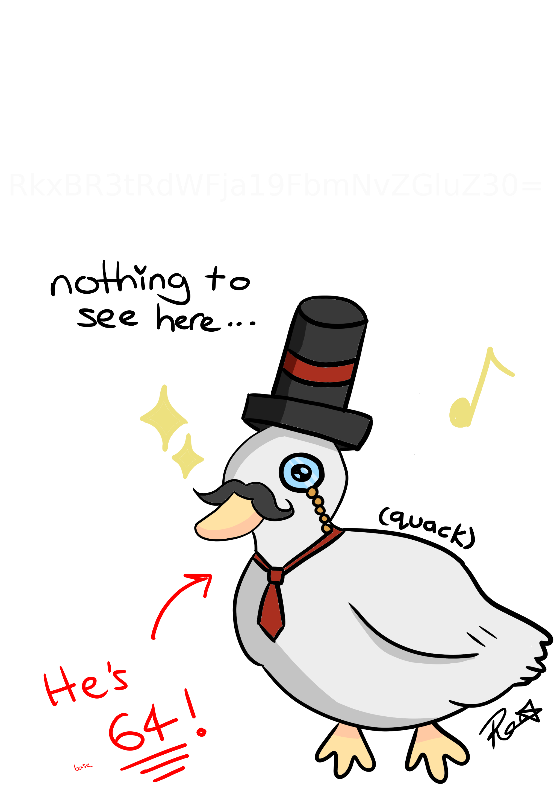
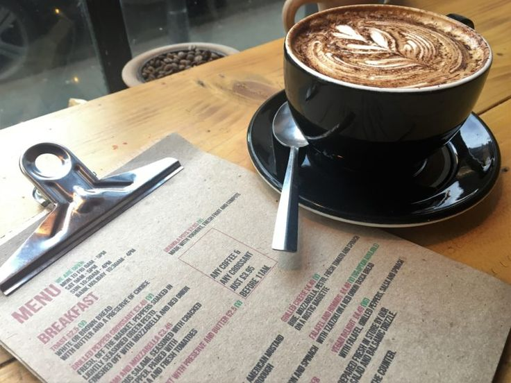
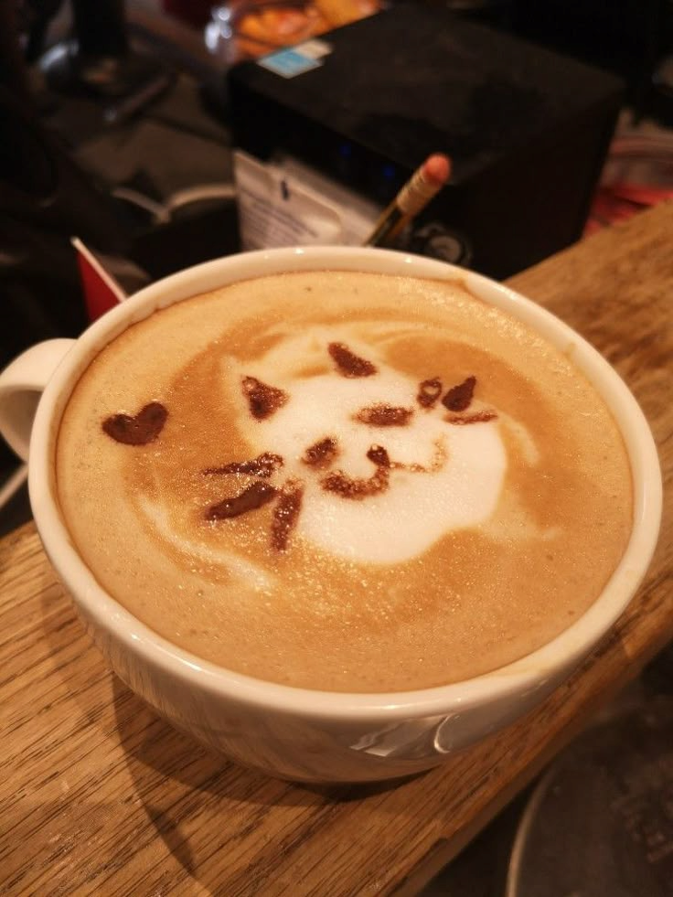

Archive item · mascot draft
Mr Duck
The mascot draft that was meant to appear beside the refreshed café listings.

A folder from the Brew Tracker's menu refresh was never cleared after the pilot. These are the original attachments from that week: a mascot draft, two café images, and a sound file saved with the rest of the design work.
“Keep the duck, the menu and the latte art together with the audio. They were all in the same folder when I picked up the café refresh. Don't tidy anything until the originals are checked.”
The mascot draft that was meant to appear beside the refreshed café listings.

A menu image prepared for the updated local listings.

A photograph supplied for the refreshed café listings.

A short audio file saved with the café photographs and menu proof.